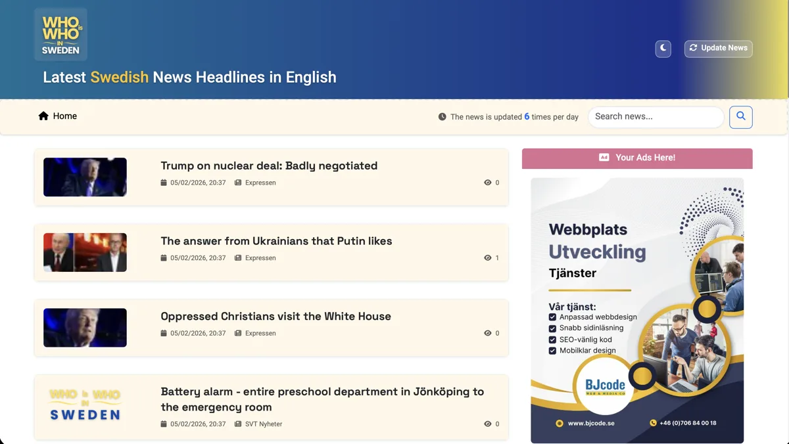
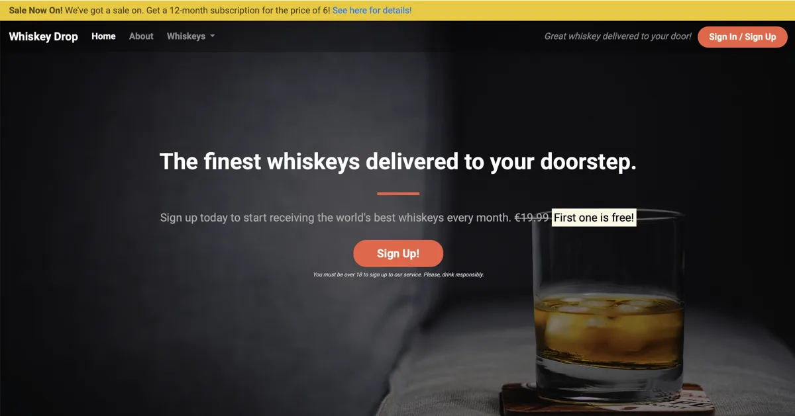
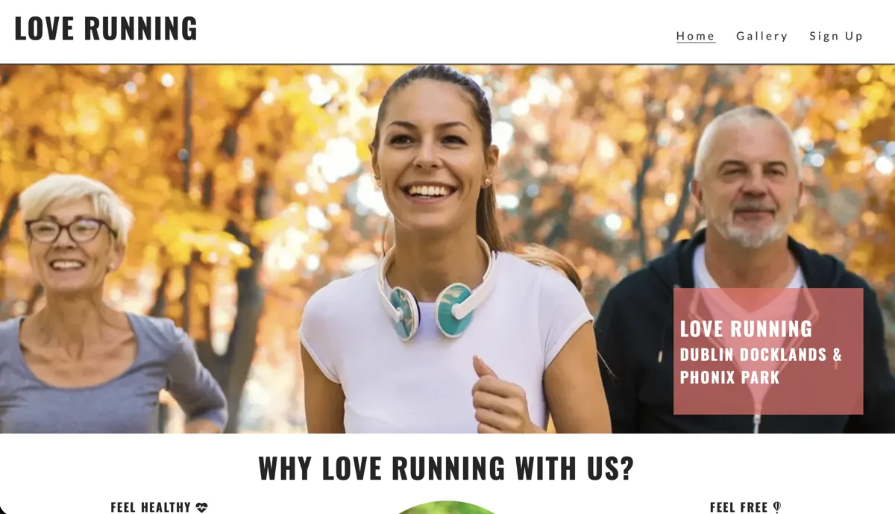
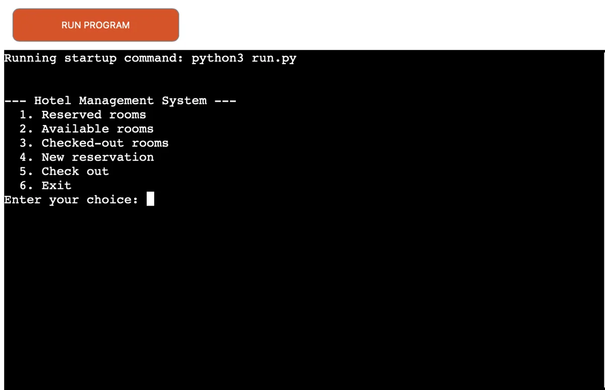

تحصیلات
Code Institute
دیپلم توسعهٔ فولاستک نرمافزار با گرایش فرانتاند پیشرفته
مدیریت راهبرد ارتباطات عمومی
نویسندگی، ضبط و تدوین
تولید محتوا با تمرکز بر ادغام در جامعه
توسعهدهندهٔ فولاستک وب
دیپلم توسعهٔ فولاستک نرمافزار با گرایش فرانتاند پیشرفته
با HTML، CSS و JavaScript رابطهایی واکنشگرا میسازم؛ با تمرکز بر استفادهٔ آسان و طراحی بصری روشن.
با Python و Django برنامههای وب مبتنی بر داده توسعه میدهم؛ از مدیریت محتوا تا حساب کاربری و احراز هویت.
نگاهی به نمونهکارهایی که تجربه و مهارتهای من در توسعهٔ وب را نشان میدهند.

وبسایتی ساختهشده با Django، با مدیریت پویای محتوا، احراز هویت کاربران و طراحی واکنشگرا. ترکیب Python در سمت سرور با HTML، CSS و JavaScript در رابط کاربری.

برنامهٔ وب Python با پیکربندی Docker و رابط کاربری HTML، CSS و JavaScript؛ همراه با تنظیمات استقرار روی سرویسهای ابری.

وبسایت شخصی برای معرفی مهارتها، تجربهها و نمونهکارها؛ ساختهشده با HTML، CSS و JavaScript، با طراحی واکنشگرا و استقرار روی Vercel.

پروژهای با Bootstrap 5 برای ساخت رابط وب واکنشگرا؛ با ساختار منظم HTML و طراحی با اولویت نمایش در موبایل.

پروژهٔ وبسایت باشگاه دویدن با HTML، CSS و Docker؛ نمونهای از توسعهٔ رابط کاربری و همکاری در ساخت وبسایت.

پروژهای با Python در سمت سرور، اجزای HTML و JavaScript در رابط کاربری و پیکربندی Docker؛ همراه با تنظیمات استقرار برنامه.